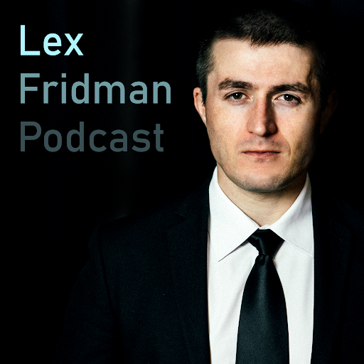

My Favorite Podcaster in the world
The Lex Fridman Podcast
| Guest | Title | Link |
|---|---|---|
| Neri Oxman: | Biology, Art, and Science of Design & Engineering with Nature | Link |
| George Hotz: | Tiny Corp, Twitter, AI Safety, Self-Driving, GPT, AGI & God | Link |
| Max Tegmark: | The Case for Halting AI Development | Link |
| Joscha Bach: | Life, Intelligence, Consciousness, AI & the Future of Humans | Link |
| Guillaume Verdon: | Beff Jezos, E/acc Movement, Physics, Computation & AGI | Link |
Why I Love Lex Fridman
- intelligent
- curious
- open-minded
- humble
- kind
- funny
- and a great listener